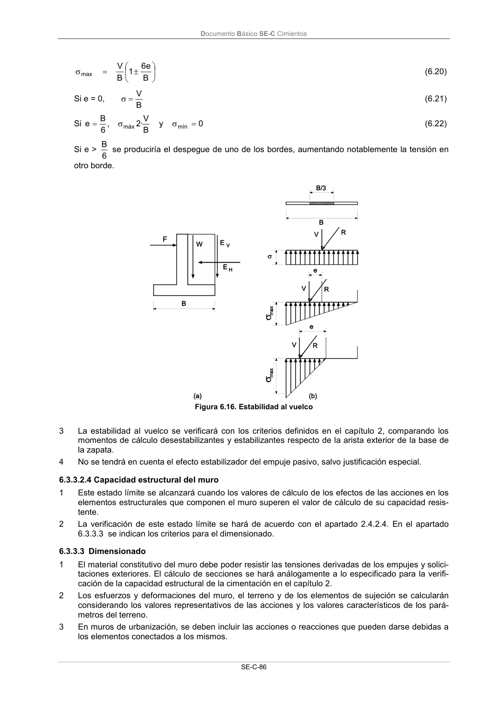

DB-SE-C Cimientos · edición 2019-12-20 · capa oficial
Documento DB-SE-C-oficial · SHA-256 del PDF a71133f4b0dca253e45ea3071c70f2a512354bcc5cd841bf89b1a502f567ac5e
Página física 91 de 165.
Copia fiel del PDF fuente · Fuente oficial
Ficha de la disposición en la fuente oficial
Formato: Texto de la página (Markdown)
Documento Básico SE-C Cimientos
SE-C-86
B
e
6
1
B
V
max
(6.20)
Si e = 0,
B
V
(6.21)
Si
0
y
B
V
·
2
,
6
B
e
mín
máx
(6.22)
Si e > 6
B se produciría el despegue de uno de los bordes, aumentando notablemente la tensión en
otro borde.
Figura 6.16. Estabilidad al vuelco
3
La estabilidad al vuelco se verificará con los criterios definidos en el capítulo 2, comparando los
momentos de cálculo desestabilizantes y estabilizantes respecto de la arista exterior de la base de
la zapata.
4
No se tendrá en cuenta el efecto estabilizador del empuje pasivo, salvo justificación especial.
6.3.3.2.4 Capacidad estructural del muro
1
Este estado límite se alcanzará cuando los valores de cálculo de los efectos de las acciones en los
elementos estructurales que componen el muro superen el valor de cálculo de su capacidad resis-
tente.
2
La verificación de este estado límite se hará de acuerdo con el apartado 2.4.2.4. En el apartado
6.3.3.3 se indican los criterios para el dimensionado.
6.3.3.3 Dimensionado
1
El material constitutivo del muro debe poder resistir las tensiones derivadas de los empujes y solici-
taciones exteriores. El cálculo de secciones se hará análogamente a lo especificado para la verifi-
cación de la capacidad estructural de la cimentación en el capítulo 2.
2
Los esfuerzos y deformaciones del muro, el terreno y de los elementos de sujeción se calcularán
considerando los valores representativos de las acciones y los valores característicos de los pará-
metros del terreno.
3
En muros de urbanización, se deben incluir las acciones o reacciones que pueden darse debidas a
los elementos conectados a los mismos.
